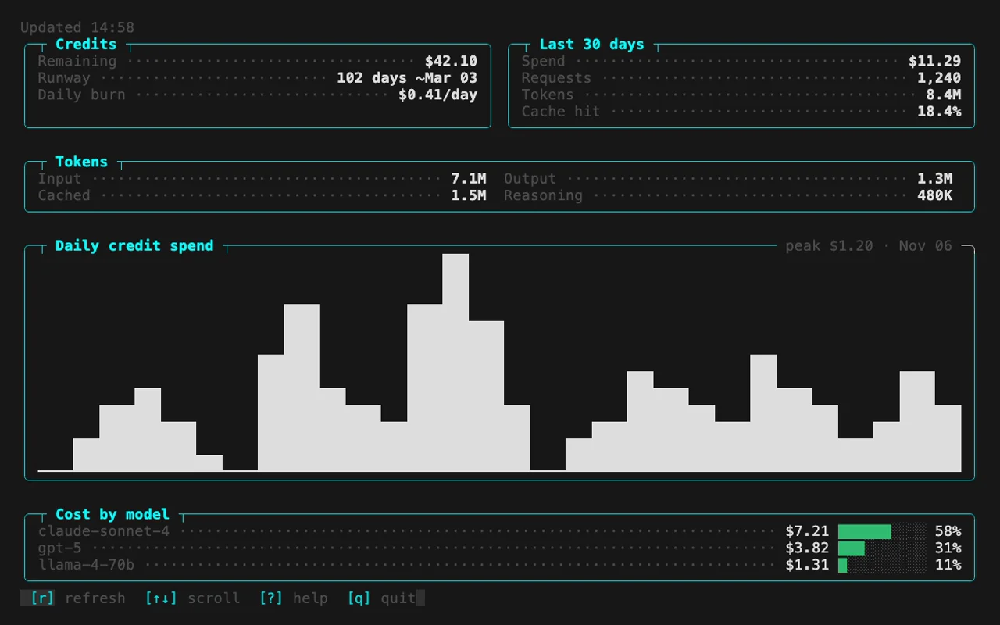

Know when your OpenRouter credits will run out.
RouteBurn is a read-only terminal dashboard for tracking your OpenRouter credit balance, the last 30 days of spend, and an estimated credit runway at the current burn rate — without opening a browser.
Terminal preview

Features
- Credit balance and recent cost monitoring. Remaining account credit as a single figure, plus spend, requests, tokens, and cache-hit rate for the last 30 days.
- Daily spend table. 30 daily UTC buckets as a scrollable table — date, spend, tokens, requests, and cache hit rate, newest first, with a pinned total row and an inline per-day meter heat-coloured green to red by share of the peak day. Days stay in UTC so the figures match the OpenRouter dashboard.
- Cost by model. Model spend for the same window, ranked with an inline proportional meter and an
Other (remaining)rollup. - Credit-runway estimate. Days until the balance reaches zero at the recent burn rate, with low-confidence and edge cases labelled instead of guessed.
- Built on Charm v2. The help bar, refresh spinner, pagination dots, and the daily table are Charm components in a full-screen alternate-screen layout; on wide terminals the panels stack in a sidebar beside the table.
- Offline snapshot cache. The last successful refresh renders immediately on startup, explicitly labelled with its age.
- Scriptable.
routeburn --jsonprints a versioned snapshot for scripts and dashboards. - Polite API usage. Configurable refresh interval with a 10-second minimum, plus server-directed throttling when OpenRouter asks to slow down.
Installation
Homebrew (macOS and Linux)
brew tap acevedomiguel/routeburn
brew install --cask routeburn
routeburn --versionThe cask installs a prebuilt binary. Because the tap is a third-party tap, Homebrew asks you
to trust it once with brew trust acevedomiguel/routeburn.
Go
go install github.com/acevedomiguel/routeburn/cmd/routeburn@latestPrebuilt binaries
Every release publishes Linux, macOS, and Windows archives plus a checksums.txt
on the GitHub Releases page.
Verify a download with sha256sum -c checksums.txt --ignore-missing.
Quick start
RouteBurn needs an OpenRouter Management API key for account credits and analytics. Create one at openrouter.ai/settings/management_keys, then run:
routeburn setup # masked prompt, validates the key, stores it, writes config
routeburn # open the dashboardsetup never echoes the key and stores nothing until OpenRouter accepts it. Keys
go to the OS keyring, or a 0600 fallback file inside a 0700 directory
when the keyring is disabled. Environment variables (ROUTEBURN_MANAGEMENT_KEY, and
optionally ROUTEBURN_API_KEY) work too and are never copied into storage.
Configuration lives in the platform config directory — print the exact path with
routeburn config path. The refresh interval defaults to 10 seconds, which is also
the minimum; shorter positive values are rejected, and 0 disables automatic
refresh.
Understanding credit runway
Runway answers “how long does the balance last at the current burn rate?” It is an estimate, not a guarantee — a sudden change in usage invalidates it immediately.
daily_burn = spend over the previous 30 complete UTC days / 30
days_remaining = remaining credits / daily_burn
depletion_date = start of today + ceil(days_remaining) daysThe window deliberately excludes the current partial day, so a dashboard opened at 02:00 cannot mistake two hours of spend for a whole day. Every non-numeric situation is labelled instead of guessed:
| Situation | Displayed |
|---|---|
| Balance at or below zero | 0 days, with a top-up warning when negative |
| No spend in the window | No recent spend |
| Analytics unavailable | Unavailable |
| Estimate beyond 100 years | Beyond horizon (flagged low confidence) |
| Fewer than seven active days | Numeric estimate, flagged low confidence |
Account runway is also not the same thing as a per-key limit reset; the dashboard answers account credit questions, and per-key limits are a separate scope.
Why days are UTC days
Every date in the dashboard is a UTC day, deliberately, so the numbers match the OpenRouter dashboard and the analytics API behind it. That API returns day buckets as UTC midnights and offers no timezone field; asking for a timezone or for hourly granularity moves the query off the daily rollups onto raw generations, which is capped at 31 days and can return partial values. Re-bucketing locally would produce totals that disagree with the source, so RouteBurn keeps UTC instead. Only the runway depletion date is shown in your local time, because that is a calendar calculation rather than an API value.
Security and privacy
- This website is static. It never sees, requests, or transmits your OpenRouter keys or account data — the application is separate and runs entirely on your machine.
- RouteBurn talks only to
https://openrouter.ai/api/v1and writes only to its own config and cache. TLS is required. - Authorization headers, tokens, and response bodies are never logged, rendered, or cached; error messages are redacted before display.
- The cache stores aggregates only, never credentials or raw responses.
- RouteBurn only reads data: no inference requests, no purchases, no key rotation or revocation.
To report a vulnerability, see SECURITY.md.
FAQ
Is RouteBurn affiliated with OpenRouter?
No. RouteBurn is an independent open-source project and is not an official OpenRouter client.
Does this website see my token?
No. The site is static pages served by GitHub Pages. It has no forms, no scripts that make network requests, and no credential flow of any kind.
How often does the app refresh?
Every 10 seconds by default, which is also the minimum interval. Set
refresh_interval in the configuration file to a longer duration, or to
0 to disable automatic refresh; manual refresh with r stays available
and is throttled.
Why are the daily buckets in UTC?
To match the OpenRouter dashboard and the analytics API, which returns UTC day buckets and accepts no timezone parameter. See Why days are UTC days.
How is runway calculated?
Average daily burn over the previous 30 complete UTC days, divided into the remaining balance. It is an estimate with labelled edge cases — see Understanding credit runway.
Where is configuration stored?
In the platform config directory — ~/.config/routeburn/config.yaml on Linux,
~/Library/Application Support/routeburn/config.yaml on macOS,
%AppData%\routeburn\config.yaml on Windows — honoring
XDG_CONFIG_HOME when set. Run routeburn config path to print the exact
location.
Can I use it without Homebrew?
Yes. Install with go install or download a prebuilt archive from the
releases page.
Open source and contributing
RouteBurn is open source under the MIT license. Contributions are welcome — start with CONTRIBUTING.md, browse the issue tracker, and read the code of conduct before opening a pull request. Release notes live on the releases page.